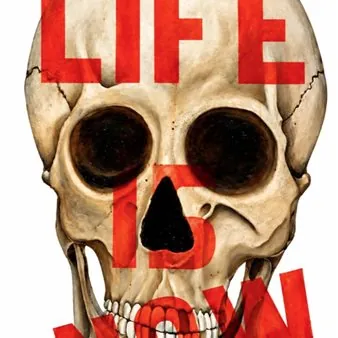

da gio 17 set a dom 8 nov
Life is now
Dal 17 ottobre al 8 novembre Galleria La Loggia Piazza Libertà 1 Mostra personale dell’artista udinese Francesco Cescutti Francesco Cescutti ha ereditato la vena artistica da suo padre Clap conservando nel suo percorso artistico una passione per la pittura derivante da una…
 Indicazioni
Indicazioni
- Costi e prenotazioni
- Costo non indicato · Prenotazione non indicata
- Programma
- Programma da verificare. Apri la fonte ufficiale per orari e possibili aggiornamenti.
- In caso di maltempo
- Nessuna indicazione specifica pubblicata.
- Note
- Acquisito automaticamente dalla fonte.
L’EVENTO
Descrizione completa
Mostra personale dell’artista udinese Francesco Cescutti
Francesco Cescutti ha ereditato la vena artistica da suo padre Clap conservando nel suo percorso artistico una passione per la pittura derivante da una famiglia dove l’arte, la cultura, l’etica e estetica unita a saldi principi morali e sociali sono stati sempre l’essenza del vivere quotidiano.
L’artista nelle sue opere realizzate con varie tecniche , concentra una riflessione che attraversa una lunga esperienza pittorica dalla quale emerge un concetto di base: la vita esiste nel presente.
La guerra, la violenza, il consumo, la perdita, la memoria, l'infanzia, il desiderio e la cultura popolare appartengono tutti al medesimo presente evocato dall’artista. LIFE IS NOW non descrive le opere, le mette in movimento.
Le sue immagini appartengono alla cultura popolare, ma vengono utilizzate per affrontare questioni universali: la vita e la morte, la memoria e il presente, l'innocenza e la violenza, il consumo e l'identità. L’artista udinese compone oggetti, personaggi e simboli immediatamente riconoscibili e li sottrae al loro significato abituale creando un personale vocabolario visivo attraverso il quale parla del nostro tempo.
Da oltre 55 anni Francesco Cescutti sviluppa una ricerca pittorica che trova nella Pop Art il proprio linguaggio privilegiato, trasformandolo in una dimensione personale, inquieta provocatoria e fortemente materica.
Nelle opere esposte , circa una ventina di lavori recenti, emerge una personalità creativa interessata non soltanto all’immagine, ma a ciò che rappresenta nella memoria collettiva.
L’artista udinese prende oggetti, personaggi e simboli immediatamente riconoscibili e li sottrae al loro significato abituale.
Una motocicletta, una bambola, un elefante, un teschio, i soldatini, la scritta No War o un animale diventano così elementi di un vocabolario visivo attraverso il quale Cescutti parla del nostro tempo.
I colori vivaci e le immagini apparentemente familiari convivono con segni corrosivi, superfici consumate, stratificazioni e figure deformate. È proprio questa tensione a caratterizzare la sua ricerca.
Particolarmente significativa è la componente materica. La superficie della tela sembra spesso sottoposta a un processo di costruzione e successiva erosione: colore, segno, materia e immagini si sovrappongono creando una sorta di pelle pittorica.
Ingresso libero
Giovedì, venerdì, sabato dalle 17.30 alle 19.30 e domenica dalle 11.30 alle 13.00
IL PROGRAMMA
Programma e orari
Appuntamenti raccolti dalle fonti elencate. Dove manca un orario, non è ancora disponibile in questa scheda.
Programma pubblicato
- Dal 2026-09-17 al 2026-11-08
INFORMAZIONI UTILI
Prima di partire
- Controllare la fonte prima di partire.
ORGANIZZAZIONE